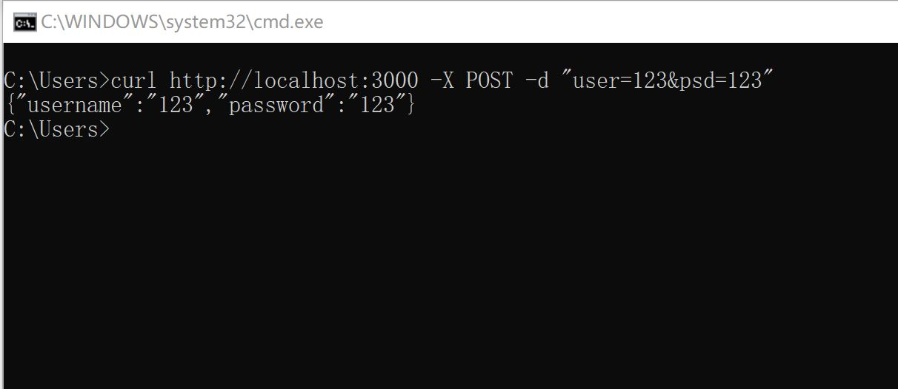

3.2 POST
koa 本身并不提供 POST 数据的解析，这里我们直接给出一个中间件，koa-body，来解析 POST 的数据。
其实，一开始的解析中间件是 koa-bodyparser，但是后面还有文件上传的功能，于是又出现了一个 koa-multer。然而，后者会和 koa-router 出现冲突。于是，koa-body 就诞生了，它解决了两个问题，于是只需要这一个中间件即可(如果想自己实验，完成一个 koa-bodyparser 中间件，可以参考博客)。
首先我们安装 koa-body
npm install koa-body
然后我们再修改一下我们的 app.js
const koa = require('koa');
const koaBody = require('koa-body');
const app = new koa();
app.use(koaBody());
app.use(async ctx => {
let username = ctx.request.body.user;
let password = ctx.request.body.psd;
ctx.body = {
username: username,
password: password
}
});
app.listen(3000, () => {
console.log('Koa running at port 3000...');
});
这次，我们使用 curl 来模拟一下 POST，偷个懒不写 axios 的 JavaScript 代码。结果如下：
